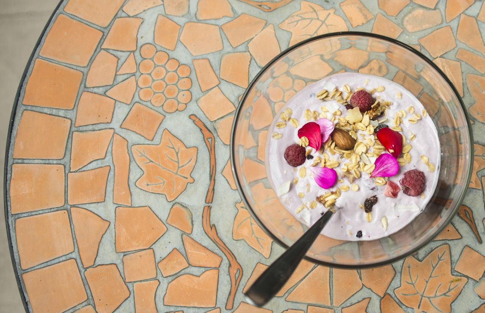
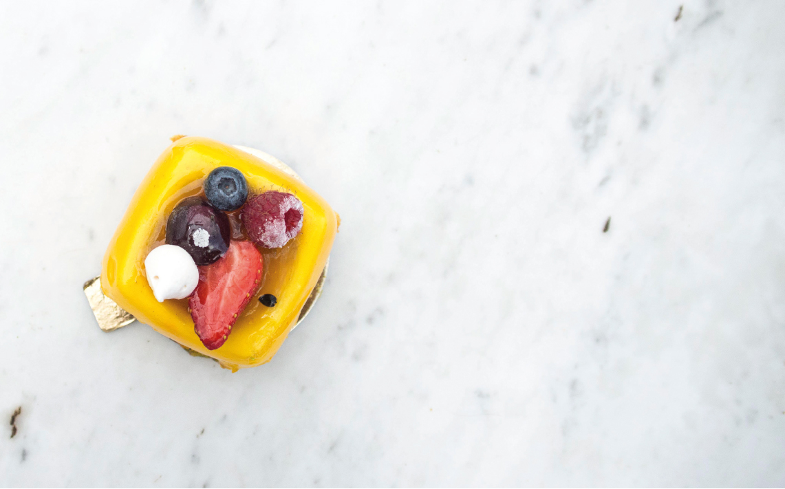
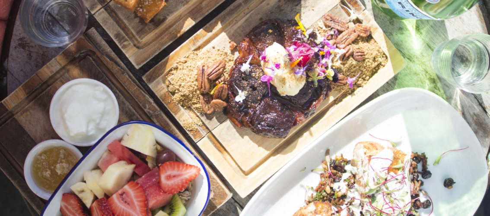

CONTOURCULTURE

Gillian Ferri
The Food Revolution Theory
Exploring the reasons behind this generation’s food obsession
"Food is our common ground, a universal experience."
Over the first two decades of the 21st Century, our screens have been bombarded with images of food, eating, cooking, and we have become an era obsessed with the addiction of having to document everything we eat. Food has become omnipresent across all platforms and all media.
Scroll through Instagram and there will be photos of what your friend ate for brunch at this café in Newtown or check your Snapchat for videos of people making breakfast. Grab a magazine or newspaper and you’ll find restaurant reviews on the newest burger joint in Sydney. Go online and there will be a score of food bloggers or YouTube vloggers (video bloggers) with a whole list of food challenges. “MasterChef” or “My Kitchen Rules”, we’ve all seen at least one of these shows at least once when we turn the TV on. Renowned chefs and food critics are gathered around a table ready to eliminate a contestant because “the Beef Carpaccio’s chilly maroon flesh was not charred enough”. What a turn-around this has become from the last century where chefs were behind the scenes slaving away in grey stainless-steel kitchens.
What has happened to us in recent years that has led to this transformation into rock star celebrity chefs and food critics? And what about other nations? What would a man or woman in a third-world country be taking a food photo of today? Have we become too focused on what we can take from the food of other countries rather than focusing on what we can give in return? We are over-consuming and over the top. With our crazy donut-waffle-jellybean-chicken-wing-topped-milkshakes and burgers the size of cakes; When do we draw the line?
Food has had such a huge influence on impacting our lives and the way we live and interact. Have you ever noticed how angry you become when you’re hungry? Well we’ve invented a new word for it; Hangry. And how extremely happy are you after you’ve eaten a great meal? There’s nothing that can bring you comfort like comfort food. It’s crazy how food can impact our thoughts, feelings and emotions. Besides all the craziness over food, it does seem to posses the ability to bring us together.
So it’s a special occasion, your mum’s birthday perhaps – the first thing that comes to mind is “Let’s have dinner!” or “What food should we have at the party?” We think of the best restaurants to take our favourite people. We think of romantic candle-lit dinners. One of the worst dates I’ve been on was when I rocked up and asked “So where are we going to eat?” to which my date replied, “I already ate.” There’s not really a mystery as to how that date ended.
Think about cooking in the kitchen with grandma when you were seven or gathering at the dinner table when all the food was ready (probably with Masterchef on the TV while you ate and predicted who was going to have the best dish). In class or at work we share our food with peers and get this sense of being “cultured” by experiencing something new, tasting something weird and wondering and rare. Food brings people together. In Australia we have the food of the world at our table, naturally sourced from the best local produce. When you give ome of the best chef’s in the world all of Australia’s freshest ingredients you get some of the best food in the world right here. Almost everywhere in Sydney has a diversity of restaurants of different cuisines. We connect even on a global scale, attracting and adapting food cultures from many other nations. In Italian culture for instance, no one (or very rarely) eats pasta alone. You are always eating and sharing with someone. Food is meant to be made, shared, celebrated. And I guess that’s why when people can’t share their food physically, they share it digitally.
Potato Blinis with Smoked Salmon
Serves 6
Ingredients
- 1 large potato, peeled, diced
- 1 egg
- 2 tbspn self-raising flour
- 1 1/2 tbspn thickened cream
- 2 tbspn snipped chives
- Cooking oil spray
- 1/2 cup light sour cream
- 100g smoked salmon
- Dill sprigs to serve
Method
Process the potato, egg and flour in a food processor or blender until smooth. Transfer to a bowl and stir in the thickened cream and chives. Season well. Heat a heavy-based frying pan over high heat and spray with oil. Drop heaped tablespoon portions of batter into the pan, in batches, and cook for 1 minute each side or until golden and cooked through. Transfer to a plate.
Top the blinis with the sour cream, somked salmon and sprinkle dill ontop to serve.
Bangers and Mash with Red Gravy
Serves 4
Ingredients
- 800g potatoes, peeled, chopped
- 1/2 cup milk, warmed
- 30g butter, melted
- 1 tbspn olive oil
- 8 thick pork sausages
- 1 large red onion, cut into wedges
- 1/4 cup salt-reduced traditional gravy powder
- 1/3 cup red wine
- 1 cup beef stock
- 2 tablespoons chopped flat-leaf parsley
Method
Place potato in saucepan. Cover with cold water. Boil for 15 minutes or until tender. Drain. Return to pan over low heat. Toss for 1 minute or until liquid has evaporated. Add milk and butter. Mash until smooth. Add salt and pepper. Heat oil in large fry pan over medium heat. Add sausages. Cook for 10 minutes or until cooked through. Transfer to plate. Return pan to medium heat. Add onion. Cook for 8 minutes or until softened. Add gravy powder. Remove from heat. Stir in combined wine and stock. Return to heat. Stir for 5 minutes or until mixture boils and thickens slightly.
Sticky Date Pudding
Serves 8
Ingredients
- 250g pitted dates, chopped
- 1 tsp bicarbonate of soda
- 1 1/2 cups boiling water
- 125g butter, softened
- 1 cup brown sugar
- 1 tsp vanilla extract
- 2 eggs
- 1 3/4 cups self-raising flour, sifted
Caramel Sauce
- 1 cup brown sugar
- 300ml thickened cream
- 1/2 teaspoon vanilla extract
- 60g butter
Method
Preheat oven to 180°C. Grease and line baking tray. Place dates and bicarb soda into a bowl. Pour over boiling water. Stand for 20 minutes. Using an electric mixer, beat butter, sugar and vanilla until pale and creamy. Add eggs, 1 at a time, beating well after each addition. Fold through date mixture and flour until well combined. Spoon mixture into prepared bake pan. Bake for 35 - 40 minutes. Turn onto a plate. For sauce, combine all ingredients in saucepan over medium heat. Stir often, until sauce comes to the boil. Reduce heat to medium-low. Simmer for 2 minutes. Pour 1/2 cup of warm sauce over pudding. Stand for 10 minutes before serving
French Toast with Berries and Syrup
Serves 6
Ingredients
- 160ml (2/3 cup) milk
- 3 eggs, lightly whisked
- 55g (1/4 cup) caster sugar
- 60g butter
- 6 x thick slices white bread
- 250g strawberries, washed, sliced
- 100g blueberries
- 120ml (1/2 cup) maple syrup
- Thickened cream, to serve
Method
Combine the milk, eggs, sugar and mixed spice in a bowl. Melt half the butter in a frying pan over high heat until foaming. Dip 3 bread slices, 1 at a time, in the egg mixture making sure they are completely submerged. Cook in pan for 2-3 minutes each side or until golden brown. Transfer to serving plates. Repeat with remaining butter, bread and egg mixture.Top toast with berries or cream. Drizzle with maple syrup to serve.
TIP: Add syrup into the pan with the butter before cooking your bread slices to create a bit of caramelisation.